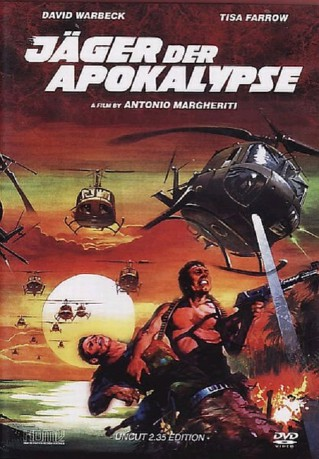

#10117 Jäger der Apokalypse
Alternativ: The Last Hunter (Englischer Titel)
 
 IMDB-Wertung: 6.0 / 10
IMDB-Wertung: 6.0 / 10  Metascore: 0
Metascore: 0 
In Vietnam wütet ein grauenhafter Dschungelkrieg. Die Moral der amerikanischen Soldaten wird zudem unentwegt durch Propagandasendungen untergraben. Captain Henry Morris, ein erfahrener Elitesoldat, bekommt ein Himmelfahrtskommando. Er und eine kleine Spezialeinheit haben die Aufgabe, den irgendwo in der grünen Hölle Vietnams verborgenen Radiosender ausfindig zu machen und diesen zu eliminieren. Grausame Menschenfallen und tückische Hinterhalte gehören zu den einfacheren Hindernissen auf dem tödlichen Weg durch den unwegsamen Dschungel.Das Platoon hat nur eine Überlebens-Chance – dem Vietkong in seiner eigenen Brutalität und Grausamkeit entgegenzutreten. Doch der Krieg kennt am Ende nur Verlierer.
Jahr: 1980
Dauer: 96 Minuten
FSK: BPjM Restricted
Land: Italien Studio: Astro DistributionTonspuren:
Untertitel: Deutsch,
Auflösung: 1080p (1920x816) Größe: 9031 MB
Genre: Action, Thriller, Drama, Krieg
Regisseur: Antonio Margheriti
Drehbuch: Gianfranco Couyoumdjian, Dardano Sacchetti
Soundtrack: Franco Micalizzi
Darsteller:
- David Warbeck als Captain Henry Morris
- Tisa Farrow als Jane Foster
- Tony King als Sgt. George Washington
- Bobby Rhodes als Carlos
- Margie Newton als Carol
- John Steiner als Major William Cash
- Massimo Vanni als Phillips
 Luciano Pigozzi als Bartender
Luciano Pigozzi als Bartender- Romano Kristoff als Pilot (uncredited)
- Edoardo Margheriti als Stinker Smith (uncredited)
 Gregory Snegoff als Drunken Soldier in Bar (uncredited)
Gregory Snegoff als Drunken Soldier in Bar (uncredited)- Hal Yamanouchi als Vietcong (uncredited)
- Dino Conti als Pot-smoking Soldier
- Gianfranco Moroni als Steve
- Jim Gaines als Deserter (uncredited)
- Miki Kim als Hooker (uncredited)
- Andy Luotto als Steve (uncredited)
- Richard McNamara als General (uncredited)
- Susan Spafford als Carol (uncredited)
- Pat Starke als Jane Foster (uncredited)
- Frank von Kuegelgen als Major William Cash (uncredited)
Datei: X:\FSK18-1900-1999\Jäger der Apokalypse (1980, FSKBPjM Restricted, 1920x816).mkv seit 05.12.2018
Festplatte: FSK18
 Es gibt insgesamt 108 Filme in der Gruppe 'FSK18-1900-1999'
Es gibt insgesamt 108 Filme in der Gruppe 'FSK18-1900-1999'